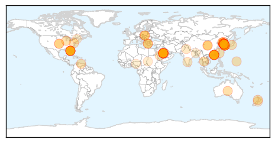
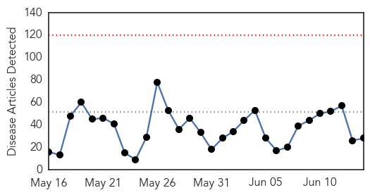
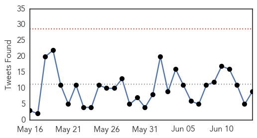

Unknown
30-Day Web Trend
8 alerts, 3 warnings

30-Day Twitter Trend
6 alerts, 1 warnings

Article Locations
Article Confidences

Top Articles:
- 1.000
- S Korea MERS virus outbreak ‘large and complex’: WHO
- 1.000
- SKorea MERS virus outbreak ‘large and complex’, says World Health Organisation
- 0.999
- Seven More MERS Cases Reported In South Korea
- 0.999
- South Korea reports seven new MERS cases
- 0.999
- Death toll from MERS outbreak in South Korea hits 14
- 0.999
- S. Korea, WHO experts downplay pandemic potential of MERS
- 0.999
- WHO plans emergency meeting as S. Korea MERS cases reach 145 — RT News
- 0.999
- Why MERS Is Likely To Crop Up Outside The Middle East Again
- 0.998
- S Korea shuts top hospital to stem MERS outbreak
- 0.997
- One more S. Korean dies of MERS, death toll up to 15
- 0.997
- MERS-hit top hospital partially closed
- 0.997
- Seven new MERS cases diagnosed in South Korea
- 0.997
- Xinhua Insight: China steps up MERS alert - Xinhua
- 0.997
- S Korea reports 15th MERS death, seven new cases - Kuwait Times
- 0.997
- S. Korea reports 15th MERS death, seven new cases (Update)
- 0.996
- South Korea reports 15th MERS death along with seven new cases Seoul
- 0.996
- S. Korea MERS death toll at 15 with 7 new cases
- 0.996
- MERS infections in S. Korea rise to 145, Samsung hospital closed - Xinhua
- 0.995
- South Korea reports 15th MERS fatality, seven new cases
- 0.995
- South Korea reports seven new MERS cases
- 0.995
- WHO: MERS outbreak 'large and complex' in South Korea
- 0.994
- Experts downplay MERS fears
- 0.994
- (3rd LD) One more S. Korean dies of MERS, death toll up to 15
- 0.994
- S. Korea reports 7 more MERS cases, bringing total to 145
- 0.994
- (2nd LD) S. Korea reports 7 more MERS cases, bringing total to 145
- 0.993
- Hospitals are the main source of rise in MERS cases
- 0.993
- Stay alert on Mers virus, HK experts warn after returning from South Korea
- 0.992
- S.Korean man thought to have MERS hospitalised in Slovakia
- 0.992
- South Korea reports 15th MERS death, 7 new cases
- 0.992
- S.Korean man thought to have MERS hospitalized in Slovakia
- 0.992
- MERS outbreak in Korea may be past its peak, panel says
- 0.991
- S. Korea reports 7 more MERS cases, bringing total to 145
- 0.990
- Saudi health experts to visit South Korea amid MERS crisis
- 0.989
- S Korea reports 15th MERS death
- 0.989
- South Korean thought to have MERS hospitalised in Slovakia – BorneoPost Online
- 0.989
- S Korea reports 15th MERS death
- 0.989
- South Korea’s response to MERS cases is faulted
- 0.988
- Mers death toll hits 15 in S. Korea; 145 infected, East Asia News & Top Stories
- 0.987
- South Korea’s response to MERS cases is faulted
- 0.987
- MERS infections in S. Korea rise to 145, Samsung hospital closed
- 0.986
- College Shut for a Week After Infection Scare
- 0.983
- Samsung forced to partially close-INSIDE Korea JoongAng Daily
- 0.982
- SKorean MERS outbreak feared to have travelled outside
- 0.979
- MERS export risks reduced
- 0.979
- One Hospital in Seoul Shut down for Becoming New Center of MERS Outbreak
- 0.977
- Hospital closes door to to try to stop spread of MERS
- 0.976
- 12 additional cases of #MERS reported bringing total number of cases in #outbreak to 138
- 0.972
- Florida Beach Goers Beware! Flesh-Eating Cannibal Like Bacteria Claims Two Lives
- 0.970
- World Health Organization Calls Emergency Meeting on 'Large, Complex' South Korea MERS Outbreak
- 0.969
- Slovakia treats new MERS case
Showing top 50 articles...
Top Tweets:
-
No tweets found for Jun 14, 2015
Ebola
30-Day Web Trend
0 alerts, 0 warnings

30-Day Twitter Trend
0 alerts, 0 warnings

Article Locations

Article Confidences

Top Articles:
- 1.000
- Decline in Ebola cases stalls in West Africa
- 0.999
- Ebola could hit again and we would hardly do better -MSFHealthcare
- 0.999
- NGO warns world leaders W.Africa not ready for new Ebola outbreak
- 0.999
- Sierra Leone Enforces Curfew as Ebola Virus Resurfaces in North West Regions
- 0.998
- Ebola could hit again and we would hardly do better
- 0.997
- Ebola ‘could hit again in West Africa’
- 0.997
- National Geographic Magazine
- 0.996
- Ebola could hit again - MSF - Africa
- 0.995
- Hawaii Tribune-Herald
- 0.995
- Sierra Leone leader imposes curfew in bid to halt Ebola
- 0.990
- Ebola nurse Will Pooley gets MBE
- 0.977
- PH ready to contain Mers—Palace
- 0.969
- PM urges Thais to be health conscious amidst MERS outbreak
- 0.968
- Ebola is on the rise again — and the world is no better prepared for it than last year
- 0.965
- North Korea vows 'watertight' measures against Mers, East Asia News & Top Stories
- 0.963
- N Korea vows 'watertight' measures against MERS
- 0.956
- Opening remarks by SFH at media session after meeting Professor Malik Peiris and Professor David Hui
- 0.945
- Please don't put me under quarantine
- 0.938
- North Korea vows ‘watertight’ measures against MERS
- 0.937
- N Korea vows 'watertight' measures against MERS
- 0.892
- Ebola fears: Milford Father Files Suit After Daughter Told To Stay Home From School Over Ebola Concerns
- 0.873
- Sepsis: What You Need To Know
- 0.868
- Ebola Medal created to recognise the people helped to stop the spread of Ebola
- 0.827
- 10 things you need to know today
- 0.726
- The world still isn't equipped to handle Ebola, Doctors Without Borders says
- 0.708
- Symantec Security Response: MERS outbreak used as bait to spread Trojan.Swort
- 0.614
- Liberian President Praises Cuba for Ebola Crisis Help
- 0.502
- World briefs: Egypt sends 23 to prison in Shiite killings
Top Tweets:
- 0.859
- Thank you Africa Liberia is on Zero Ebola cases let's get Guinea and Sierra Leone to Zero help MakeHealthHappen AUSummit 25thAUSummit
- 0.839
- RT: The lesson from the Ebola Virus Disease is that with African solidarity & resolve we can find our own solutions to our c…
- 0.721
- The world still isn't equipped to handle Ebola Doctors Without Borders says - The Week Magazine http://t.co/mnKpusazXD ebola EVD
- 0.655
- Flu MERS Ebola...When sensible thorough & rapid epidemiological analysis is required you can expect to see MVK! https://t.co/sRrC4r4Unt
- 0.644
- RT: Ebola exposed the weaknesses of our health systems. Henceforth we must train more health workers & build & strengthen ou…
- 0.642
- Ebola fight not over yet: MSF - Reuters http://t.co/4E7IRJYOwx ebola EVD
- 0.614
- Learn more here how Ebola cases have risen in Guinea and Sierra Leone https://t.co/uzOoMmkuPw makehealthhappen 25thausummit AUSummit
- 0.601
- Liberian President Praises Cuba for Ebola Crisis Help - teleSUR English http://t.co/E6qnHoR9oh ebola EVD
- 0.528
- MSF: Ebola fight not over yet - Washington Post http://t.co/2oncEXCtix ebola EVD